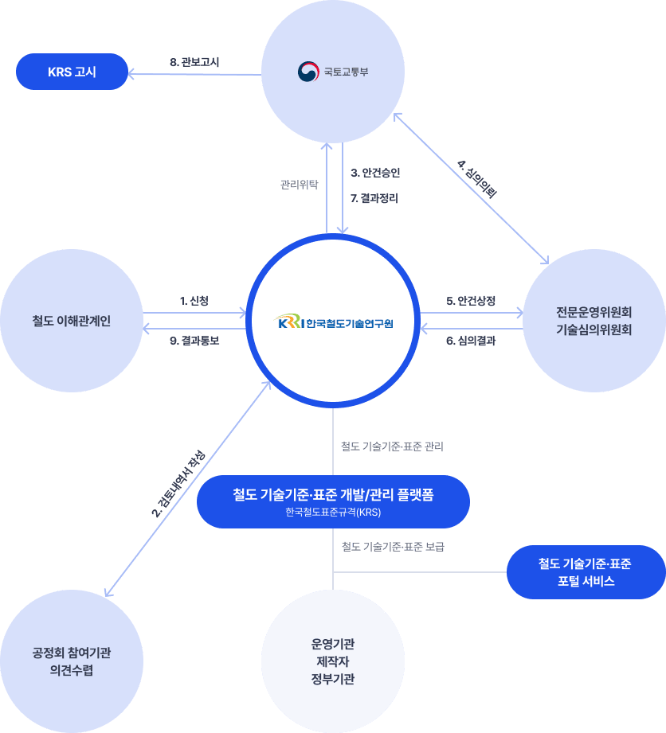

철도 기술기준·표준 개발/관리
한국철도표준규격
-
- 한국철도표준규격(KRS)가 무엇인가요?
- KRS(Korean Railway Standards)는 철도 안전법 제34조에 따라 만들어진 대한민국의 철도 관련 기술 표준입니다.
철도차량, 용품, 시설 등에 대한 기술 표준을 제시하고 철도 시스템의 안전성과 호환성을 확보하며,
더 나아가 철도 안전관리 체계구축에 이바지하는 것을 목표로 합니다.
-
철도안전법 제34조
국토교통부장관은 철도의 안전과 호환성의 확보 등을 위하여 철도차량 및 철도용품의 표준규격을 정하여 철도운영자 등 또는 철도차량을 제작·조립 또는 수입하려는 자등에게 권고할 수 있습니다.
다만, 「산업표준화법」에 따른 한국산업표준이 제정되어 있는 사항에 대하여는 그 표준에 따릅니다. -

관계법령
- 철도안전법(법률 제14868호, 2007.8.9., 일부개정) 제34조(표준화)
- 철도안전법 시행규칙(국토교통부령 제454호, 2017.10.20., 일부개정)
- 철도표준규격관리 시행지침(국토교통부고시 제2016-1009호, 2016.12.26., 일부개정)
- 한국철도표준규격은 철도차량과 용품을 대상으로 안전과 호환성이 입증되어야 합니다
- 철도의 안전운행 및 호환성 확보를 목적으로 철도산업에서 사용하는 철도차량 및 철도용품으로서,
철도현장에서 실제 적용을 완료하여 안전 및 호환성에 문제가 없음이 입증된 용품을 대상으로 철도표준규격을 정하고 있습니다.

-
- 한국철도표준규격(KRS)은 크게 세가지로 분류됩니다
- KRS(Korean Railway Standards)는 철도 차량용품, 시설용품, 전력신호통신용품을 기준으로 총 277개의 표준이 분류됩니다.
-
-
 철도 시설용품 19
철도 시설용품 19 -
-
CV
0 토목용품 Civil
-
TR
15 궤도용품(hover) Track
-
AC
1 건축용품 Architecture
-
CV
-
-
-
철도 전력신호정보통신 169
-
-
PW
73 전철전력용품 Power
-
SG
70 신호용품 Signal
-
CM
26 통신용품 Communication
-
PW
-
-
-
철도 차량용품 92
-
-
CB
8 차체설비용 Car Body
-
RN
25 주행장치용품 Running
-
BR
25 제동장치용품 Braking
-
PP
14 추진장치용품 Propulsion
-
AP
9 보조전원장치용품 Auxiliary Power
-
CS
3 차상신호장치용품 Cab Signal
-
OS
1 운전자보안장치용품 Operator Security
-
CC
1 종합제어장치용품 Composite Control
-
CP
3 연결장치용품 Coupling
-
EQ
2 그 밖의 장치용품 Equipment
-
CB
-
-
- 한국철도표준규격(KRS)의 구성과 관리는 다음과 같습니다
- 규격 구성은 표준안 작성에 필요한 가이드라인을 제시한 것 입니다.
해당 내용은 표준안을 작성 시 포함되어야 할 주요 항목으로, 문서 작성 시 아래 사항들을 고려할 수 있습니다.
-
01
적용범위, 인용규격, 제품분류, 용어정의 등
표준규격 문서의 목적과 범위를 명확하게 정의합니다.
-
02
요구특성
제품의 기능, 성능, 안전과 관련된 구체적인 요구사항과 특성치를 명시합니다.
- 요구특성제품의 기능 및 성능과 관련된 항목 및 특성치
- 제품의 안전과 관련하여 요구되는 항목 및 특성치
- 안전 및 성능에 영향을 줄 수 있거나 타 철도기기(궤도, 철도차량 포함)외의 interface에 영향을 줄 수 있는 치수 및 형상 등의 사항
-
03
재료, 구조 및 가공방법
제품의 제작 방법이나 재료에 대한 기술적인 요구사항을 명시합니다.
단, 특허 분쟁의 소지가 있는 사항은 제외합니다. -
04
검사 또는 시험 항목과 방법
제품의 성능과 안전성을 검증하기 위한 검사와 시험 절차를 명시합니다.
-
05
기타 필요에 의해 정하는 사항 또는 부속설명서
제품의 특성에 따라 추가적으로 필요한 세부 지침이나 부속 문서를 포함합니다.
- 성능과 안전에 영향을 주지 않는 제작사양(제작도면 포함) 및 포장, 표식에 대해서는 해당 수요처에 별도 정하여 관리합니다.
-
- 제정, 개정, 폐지 절차는 어떻게 이루어지나요?
- 제정, 개정 혹은 폐지 절차는 크게 4가지 단계로 구성되어 있습니다.
제·개정안과 의견서를 함께 제출해 신청을 하면 관련 이해관계자들이 제출된 안을 검토하고 분석합니다.
해당 과정이 완료되면 전문운영위원회, 기술심의위원회의 심의를 거쳐 국토교통부에서 최종적으로 확정 고시를 합니다.
-
Step1 신청
-
Step2 검토 및 분석
-
Step3 심의
-
Step4 확정고시
-
신청인의 제정, 개정 혹은 폐지에 대한 의견서를 접수하고
제정, 개정, 폐지에 대한 필요성을 검토합니다.-
철도용품 품질 인증과 관련하여 제작업체, 판매자 등 모든 이해관계자들이 해당됩니다.
-
철도 표준규격 제정, 개정, 폐지 의견서(제 32호 서식) 및 첨부서류(검토의견서)를 다운받아 신청해주세요.
※ 자료들을 준비하여 신청할 수 있습니다.
- 표준규격의 제정·개정·폐지에 관한 신청의 접수
- 표준규격의 제정·개정·폐지 및 확인 대상의 검토
- 1.제정, 개정, 폐지안에 대한 사유
- 2.국내외 관련 규격 및 인용규격특허 등 산업재산권에 대한 저촉여부 및 검토사항
- 3.검사 및 시험방법에 따른 공인시험 또는 검사기관에서 발행한 성적서
- 4.기타규격 안 검토에 필요한 자료(제품개요, 현장설치 시험 또는 운영현황, 요구 성능 및 기준 산출근거, 기대효과, 산업파급효과 등)
-
이메일 krs@krri.re.kr또는 플랫폼을 통해 온라인으로 신청서를 제출할 수 있습니다.
-
철도안전법 시행규칙 제74조에 따라 고시한 날부터 3년마다 제정 규격에 대한 타당성을 확인해야 됩니다.
※ 예외사항이 발생할 수 있습니다. (3년 이내)
- 철도기술의 향상 등으로 개정 또는 폐지가 필요한 경우
- 사용 중인 철도표준규격의 적용에 문제점이 발생한 경우
- 그 밖에 철도 안전 및 호환성 확보를 위하여 즉시 확인이 필요한 경우
-
국토교토부장관으로부터 한국철도기술연구원이 위탁받아 관리하고 있습니다.
※ 국토교통부장관은 법 제77조제2항에 따라서 법 제34조제1항에 따라 다음의 업무를 한국철도기술연구원에 위탁합니다.
- 표준규격서의 작성
-
-
신청인의 표준(안)에 대한 검토를 비롯해
필요에 따라 한국철도기술연구원이 직접 분석/시험을 실시합니다-
네. 필요시 검토에 대한 추가자료 요청이 있을 수 있습니다.
-
서류 검토로 불충분할 경우 기술적 적합성 판단을 위한 분석 및 실험실시가 이루어질 수 있습니다.
- 당해 이해관계자가 비용을 부담합니다.
- 자체 또는 외부기관(국내외 공인 시험 및 검사기관)에 이를 의뢰합니다.
-
네. 규격서 작성(제정, 개정)의 경우 한국철도기술연구원 또는 외부 전문 기관에 의뢰하고 있습니다.
-
-
절차에 따라 표준(안)에 대한
전문운영위원회 및 기술위원회의 심의를 받습니다.-
철도안전법 시행규칙 제74조에 따라, 철도표준규격을 제·개정 하거나 폐지하려는 경우 기술위원회의 심의를 거쳐야 합니다.
-
철도안전법 제45조에 의하여 기술분과별로 전문위원회를 구성하고 있습니다.
- 분과별 전문위원회 : 철도차량 분과, 철도시설 분과, 철도전력•신호•정보통신 분과, 철도운영 분과
-
심의 단계에서 서류들이 필요합니다.
※ 철도표준규격의 개정이나 확인의 경우 단순 기능 또는 용량의 추가, 자구 수정 등의 경미한 사항은 위원회심의를 거치지 않습니다.
- 규격 제정·개정·폐지 안
- 철도표준 규격안 검토 내역서
- 1.관련철도표준규격, 관련산업규격 및 국제규격과의 대비
- 2.심의에 필요한 참고자료
- 3.의견수렴(공청회 포함)내용, 시험 및 분석결과
-
위원장이 한국철도기술연구원장을 경유하여 국토부장관에게 통보합니다.
-
-
기술기준(안)과 표준(안)의 제·개정, 폐지 건에 대해
최종심의 결과를 반영하여 확정 고시합니다-
심의 완료후 15일 이내 확정고시가 이루어지며, 당해 규격의 명칭, 규격번호와 제정, 개정 및 폐지의 구분 및 연월일을 관보에 고시합니다.
- 철도안전법 시행규칙 제 74조에 따라 철도표준규격을 한국산업규격으로 대체하여 적용에 문제가 없다고 인정되는 경우, 해당 철도표준규격은 폐지합니다
- 철도안전법 시행규칙 제 74조에 따라 철도표준규격을 제정한 경우에는 해당 철도표준규격의 명칭·번호 및 제정 연월일 등을 관보에 고시합니다.
- 고시한 철도표준규격을 개정하거나 폐지한 경우에도 같습니다.
-
국토교토부장관으로부터 한국철도기술연구원이 위탁받아 관리하고 있습니다.
※ 국토교통부장관은 법 제77조제2항에 따라서 법 제34조제1항에 따라 다음의 업무를 한국철도기술연구원에 위탁합니다.
- 표준규격의 제정·개정·폐지 및 확인에 대한 처리결과 통보
- 표준규격서의 기록 및 보관
-
철도표준규격관리 시행지침 제 14조에 따라 홈페이지에 등재하여 열람이 가능하도록 하고, 인쇄 보급하도록 지원하고 있습니다.
-
철도표준규격관리 시행지침 제 17조에 따라 무역확대 및 국가간 연계가 필요한 부문에 관한 철도표준규격은 관련 국제 규격과의 적합성 등을 검토하여 국제규격에 부합화하고, 당해 철도규격을 영문화하여 국내 및 해외의 각 기관에 배포하는 노력을 하여야 합니다.
-
Copyright (C) Korea Railroad Research Institute. All Rights Reserved.